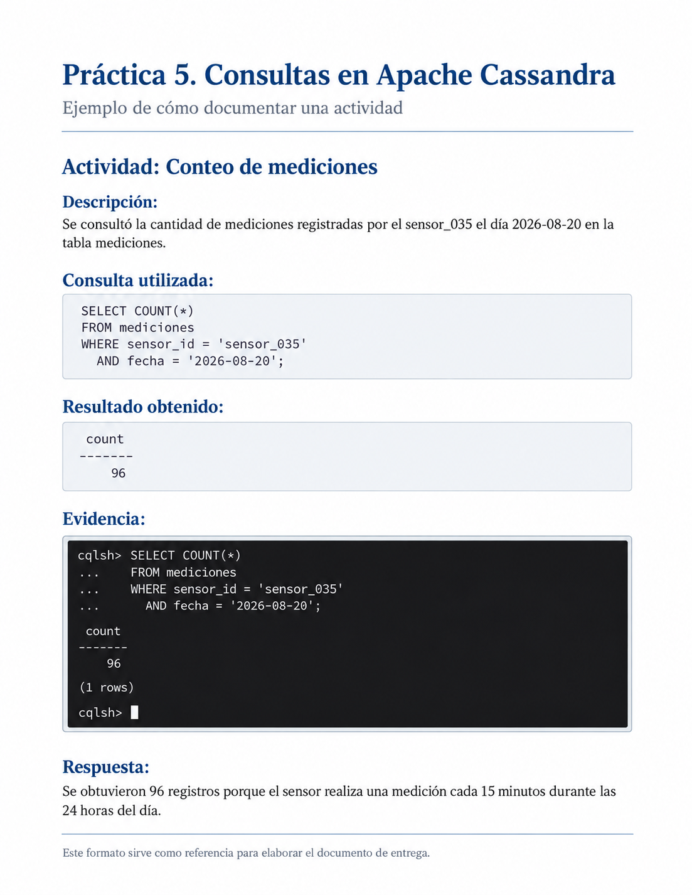

Práctica 5. Consultas sobre datos de monitoreo ambiental en Apache Cassandra
1 Objetivo
Aplicar consultas en Apache Cassandra utilizando una base de datos de monitoreo ambiental con más de un millón de registros.
Durante la práctica se reforzarán los conceptos de clave de partición, columnas de agrupamiento, consultas por intervalos y diseño orientado a consultas.
2 Descripción
En la práctica anterior se generó e importó una base de datos con mediciones simuladas de temperatura y humedad.
La tabla mediciones contiene información de:
100 sensoresdurante:
127 díascon una medición cada:
15 minutosEn total se almacenaron:
1,219,200 registrosEn esta práctica utilizarás esa misma información para realizar diferentes consultas en Apache Cassandra y analizar cómo influye el diseño de la tabla en la recuperación de los datos.
La estructura de la tabla es:
CREATE TABLE mediciones (
sensor_id TEXT,
fecha DATE,
momento TIMESTAMP,
temperatura DECIMAL,
humedad DECIMAL,
PRIMARY KEY ((sensor_id, fecha), momento)
) WITH CLUSTERING ORDER BY (momento DESC);La clave de partición está formada por:
(sensor_id, fecha)mientras que:
momentoorganiza los registros dentro de cada partición.
3 Indicaciones generales
Durante la práctica deberás elaborar un documento de Word en el que registres los resultados de cada actividad.
El documento deberá incluir una portada con tu nombre, matrícula y grupo.
Para cada actividad incorpora los siguientes elementos:
- Descripción: explica brevemente qué realizaste.
- Consulta utilizada: escribe la instrucción CQL que ejecutaste.
- Evidencia: inserta una captura de pantalla donde se observe la consulta y el resultado obtenido.
- Respuesta: contesta las preguntas planteadas en cada actividad.
Completa cada apartado conforme avances en la práctica.
No es necesario incluir nuevamente el proceso de generación ni de importación del archivo CSV.
Al finalizar, convierte el documento de Word a PDF y entrégalo en Eminus.
3.1 Ejemplo de cómo documentar la actividad
La siguiente imagen muestra un ejemplo de cómo puedes organizar en Word los resultados obtenidos durante la práctica.
Para cada actividad incluye:
- Una breve descripción de lo realizado.
- La consulta CQL utilizada.
- El resultado obtenido.
- Una captura de pantalla como evidencia.
- Las respuestas a las preguntas correspondientes.

Este ejemplo sirve únicamente como referencia para la presentación del documento. Los resultados pueden variar de acuerdo con las consultas realizadas y los valores almacenados en la base de datos.
Elabora tu documento conforme avances en cada una de las actividades de la práctica.
4 Preparar Cassandra
Abre Docker Desktop y espera a que se encuentre funcionando.
Después abre PowerShell en Windows o Terminal en macOS.
Inicia el contenedor:
docker start cassandra-labComprueba que se encuentre activo:
docker psDespués entra a Cassandra:
docker exec -it cassandra-lab cqlshSelecciona el espacio de claves:
USE monitoreo_ambiental;Antes de comenzar, comprueba que los datos de la práctica anterior continúan almacenados.
Ejecuta:
SELECT COUNT(*)
FROM mediciones
WHERE sensor_id = 'sensor_001'
AND fecha = '2026-06-01';El resultado esperado es:
96Si obtienes este resultado, puedes continuar con la práctica.
5 Consulta de las mediciones de un sensor
Consulta todas las mediciones realizadas por:
sensor_020durante:
15 de julio de 2026La consulta deberá mostrar únicamente:
- Momento.
- Temperatura.
- Humedad.
Una vez realizada la consulta, responde:
- ¿Cuántos registros fueron recuperados?
- ¿Por qué Cassandra puede localizar directamente esta información?
- ¿Qué valores forman la clave de partición utilizada?
Documenta esta actividad en Word con una breve descripción, la consulta utilizada, una captura del resultado y las respuestas correspondientes.
6 Conteo de mediciones
Determina cuántas mediciones fueron registradas por:
sensor_035el día:
20 de agosto de 2026Utiliza una consulta que permita contar los registros almacenados en esa partición.
Una vez realizada la consulta, responde:
- ¿Cuántos registros se obtuvieron?
- ¿Por qué se espera encontrar 96 mediciones?
- ¿Qué representa cada uno de esos registros?
Documenta esta actividad en Word con una breve descripción, la consulta utilizada, una captura del resultado y las respuestas correspondientes.
7 Mediciones más recientes
Consulta las:
5 mediciones más recientesdel:
sensor_075durante el:
20 de septiembre de 2026Muestra solamente:
- Momento.
- Temperatura.
- Humedad.
Una vez realizada la consulta, responde:
- ¿Cuál es la primera hora mostrada?
- ¿Por qué las mediciones aparecen de la más reciente a la más antigua?
- ¿Qué relación tiene este resultado con:
CLUSTERING ORDER BY (momento DESC)?
Documenta esta actividad en Word con una breve descripción, la consulta utilizada, una captura del resultado y las respuestas correspondientes.
8 Consulta por intervalo de tiempo
Consulta las mediciones del:
sensor_010correspondientes al:
10 de agosto de 2026entre las:
08:00y las:
10:00Muestra:
- Momento.
- Temperatura.
- Humedad.
Una vez realizada la consulta, responde:
- ¿Cuántas mediciones fueron recuperadas?
- ¿Por qué es posible utilizar
momentopara establecer el intervalo? - ¿Qué función cumple
momentodentro de la clave primaria?
Documenta esta actividad en Word con una breve descripción, la consulta utilizada, una captura del resultado y las respuestas correspondientes.
9 Consulta de una medición específica
Consulta la temperatura y humedad registradas por:
sensor_050el día:
1 de septiembre de 2026a las:
14:30Muestra únicamente:
- Momento.
- Temperatura.
- Humedad.
Una vez realizada la consulta, responde:
- ¿Qué columnas fueron necesarias para localizar exactamente ese registro?
- ¿Qué parte corresponde a la clave de partición?
- ¿Qué columna permite identificar la medición dentro de la partición?
Documenta esta actividad en Word con una breve descripción, la consulta utilizada, una captura del resultado y las respuestas correspondientes.
10 Comparación entre sensores
Consulta las primeras:
10 medicionesdel:
sensor_025y del:
sensor_026para el día:
5 de octubre de 2026Realiza una consulta para cada sensor.
Después responde:
- ¿Los registros de ambos sensores pertenecen a la misma partición?
- ¿Por qué?
- ¿Qué combinación de valores identifica cada partición?
Documenta esta actividad en Word con una breve descripción, las consultas utilizadas, una captura de los resultados y las respuestas correspondientes.
11 Consulta utilizando solamente el sensor
Intenta recuperar las mediciones utilizando únicamente:
sensor_idPor ejemplo:
SELECT *
FROM mediciones
WHERE sensor_id = 'sensor_001';Observa el mensaje generado por Cassandra.
Después responde:
- ¿La consulta se ejecutó correctamente?
- ¿Por qué no es suficiente utilizar solamente
sensor_id? - ¿Qué otro campo forma parte de la clave de partición?
Documenta esta actividad en Word con una breve descripción, la consulta utilizada, una captura del mensaje obtenido y las respuestas correspondientes.
12 Consulta por temperatura
Supongamos que necesitamos conocer todas las mediciones cuya temperatura sea superior a:
30 °CIntenta ejecutar:
SELECT *
FROM mediciones
WHERE temperatura > 30;Observa el resultado o mensaje generado por Cassandra.
Después responde:
- ¿La consulta se ejecutó?
- ¿
temperaturaforma parte de la clave de partición? - ¿
temperaturaes una columna de agrupamiento? - ¿Por qué Cassandra no puede localizar directamente esos registros?
Documenta esta actividad en Word con una breve descripción, la consulta utilizada, una captura del resultado y las respuestas correspondientes.
13 Uso de ALLOW FILTERING
Ahora ejecuta:
SELECT *
FROM mediciones
WHERE temperatura > 30
ALLOW FILTERING;Observa el resultado.
Después responde:
- ¿Qué diferencia existe con la consulta anterior?
- ¿Qué permite hacer
ALLOW FILTERING? - ¿Consideras adecuado utilizar este tipo de consulta constantemente sobre más de un millón de registros?
- Explica brevemente por qué.
ALLOW FILTERING permite ejecutar determinadas consultas que no corresponden directamente con el diseño de la tabla.
Sin embargo, no significa que la consulta sea eficiente.
Documenta esta actividad en Word con una breve descripción, la consulta utilizada, una captura del resultado y las respuestas correspondientes.
14 Diseño orientado a consultas
Imagina que una aplicación necesita responder frecuentemente la siguiente pregunta:
¿Qué sensores registraron temperaturas superiores a 30 °C en una fecha determinada?
La tabla actual fue diseñada principalmente para responder consultas como:
¿Qué mediciones realizó un sensor durante un día?
Responde:
- ¿La tabla
medicionesestá diseñada adecuadamente para buscar directamente todas las temperaturas superiores a 30 °C? - ¿Sería recomendable utilizar
ALLOW FILTERINGcada vez que se necesite esta información? - ¿Qué alternativa propondrías?
- ¿Por qué en Cassandra es importante conocer primero las consultas que realizará una aplicación?
Documenta esta actividad en Word con tus respuestas.
15 Reflexión final
Para finalizar, responde con tus propias palabras:
- ¿Cuál es la clave de partición de la tabla
mediciones? - ¿Qué función cumple la columna
momento? - ¿Por qué una consulta utilizando
sensor_idyfechaes eficiente? - ¿Por qué una consulta utilizando solamente
temperaturano corresponde con el diseño actual? - Explica la siguiente idea:
En Cassandra primero pensamos en las consultas
y después diseñamos las tablas.16 Evidencia de entrega
Entrega un documento en PDF que contenga:
- Portada con nombre, matrícula y grupo.
- Las actividades desarrolladas.
- Una breve descripción de lo realizado en cada actividad.
- Las consultas utilizadas.
- Capturas de pantalla de los resultados obtenidos.
- Las respuestas a las preguntas planteadas.
- La reflexión final.
Importante: utiliza la base de datos de monitoreo ambiental creada en la práctica anterior. No es necesario volver a generar ni importar los 1,219,200 registros.
El documento deberá elaborarse conforme se realizan los ejercicios en Cassandra. Al finalizar la práctica, conviértelo a PDF y súbelo a Eminus.